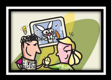
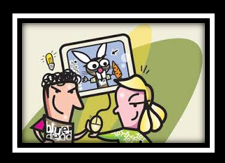
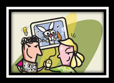
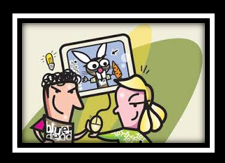
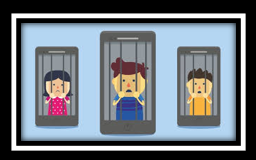
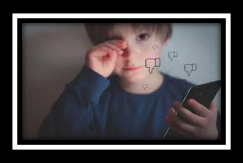
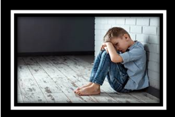

La metodología que utiliza implica que la victima no pueda defenderse con facilidad. En el ciberbullying las víctimas y acosadores son niños/as o adolescentes, que tienden a ser compañeros en la escuela y tienen una relación física. Hay que tener en cuenta, que para que la conducta violenta pueda considerarse ciberbullying en ambos extremos puede haver menores .Por ende causa consecuencias que pueden ser :
Es muy significativo el daño emocional que producen estas conductas en las víctimas. Este sufrimiento emocional puede ser más elevado que el acoso a través de otros métodos, debido a que la información dañina es pública y está disponible durante las 24h, siendo muy difícil eliminar el contenido. Las consecuencias del ciberbullying se asemejan a las consecuencias del acoLas consecuencias más representativas son las siguientes:
Los acosadores, con estos actos, entrevén que pueden conseguir la atención y aquello que quieren a partir de actos violentos y el acoso a personas que consideran más débiles. Las principales consecuencias de estas conductas son las siguientes:
